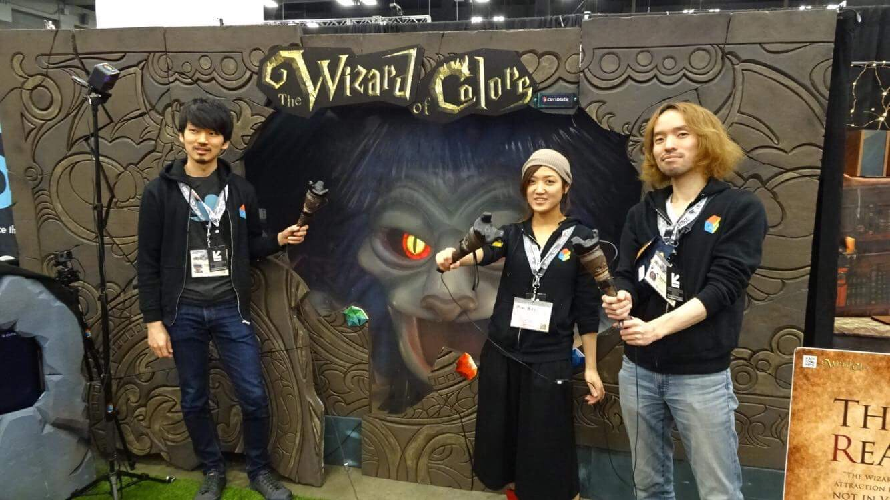
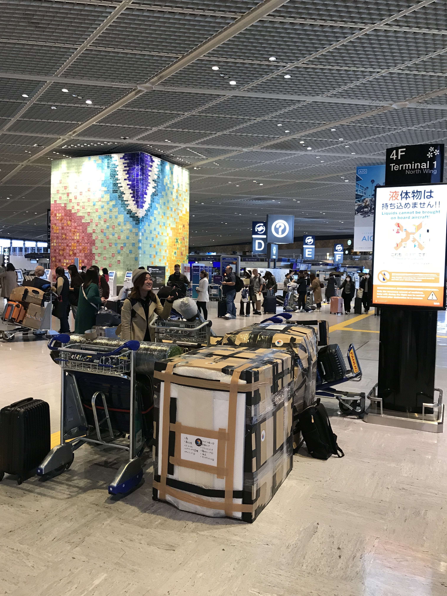
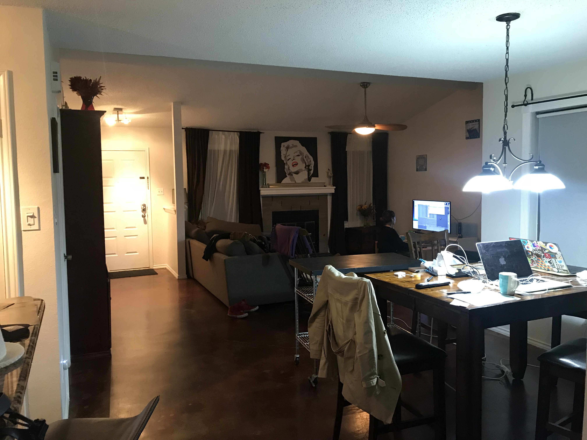
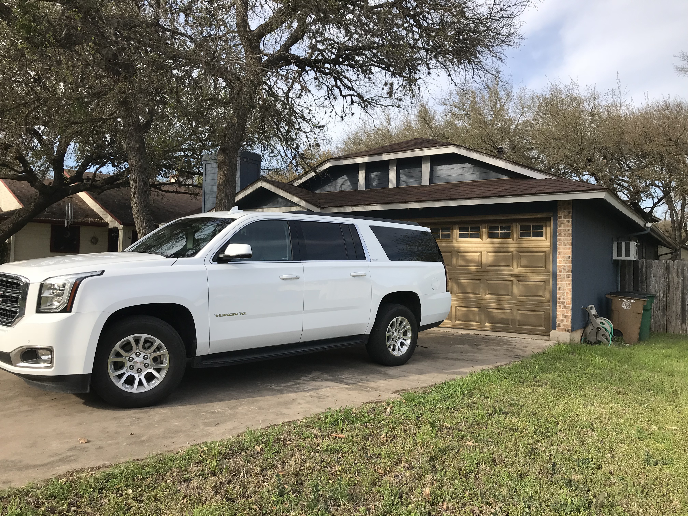
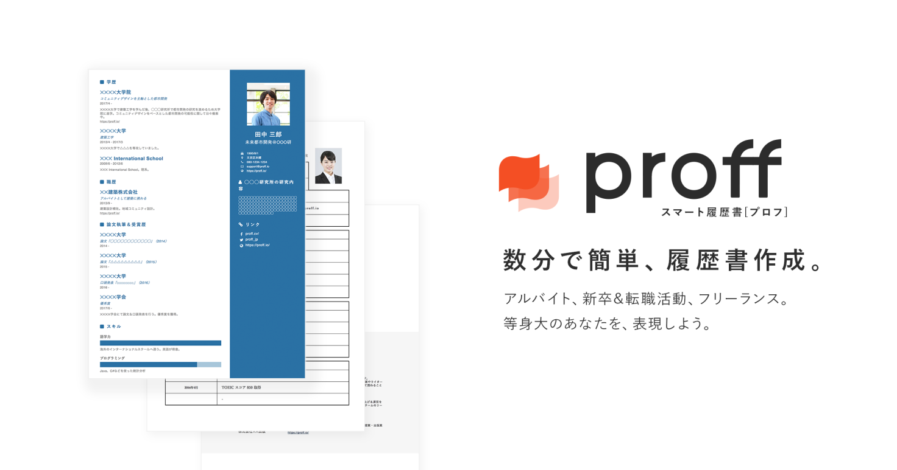

2018年を振り返る
激動の一年でした．
SXSW
3 月にアメリカ/テキサス州オースティンで行われた SXSW:SouthBySouthWest というイベントに Real Fantasy を出展しました．毎年 3 月にテキサスで行われている音楽・映画・テクノロジーの祭典で約2週間オースティンの待ちがお祭りになります．自分たちの出展期間は 4 日間でした．👉 Release

出展の荷物たち．入国審査や現地ついてからの運搬が地獄でした．

2 週間 AirBnB で家借りて社のメンバー 3 人で住み，出展期間が終わるまでは UberEats を食べながらバグ直したり開発合宿のような日々でした．

滞在中はドライバーとしても活躍しました．一人で車借りたり，買い出し行ったりして現地で生活したらこんな感じなのかと，生活を疑似体験したのもいい思い出です．

貴重な経験をさせてもらったこと，とても感謝しています．
Proff

今年は多くの人に認知され使ってもらえるサービスになりました．元々，レジュメを管理するサービスでよいのがなく，Google SpreadSheets で管理していました．海外のサービスでこういうのはありましたが，日本語でいい感じに表示してくるサービスがなく自分でつくり始めたのがキッカケでした．@u_furuya が出てくれた記事 履歴書作成ツール兼ポートフォリオサービス「Proff」正式公開——ロールモデルの提案ツール目指す を皮切りにユーザー数がグッと増えました．人づてで同じ業界以外の人も使ってくれていることを聞いたり，採用担当してる人から Proff の履歴書でエントリー来たという声をもらい，非常に嬉しかったです．
OSS
プロダクトつくる上で必要になった機能をチマチマ OSS にしてました．
- enum_select_rails
- rumojinize ( blog )
- multi_seeds_rails ( blog )
- web_service_uri ( blog )
- nuxt-sentry ( qiita: Sentry で Nuxt.js のエラー検知 + 環境変数の扱いに関する Tips )
旅行
転職
8 月からメルペイで働いています．早いものでもう 5 ヶ月経とうとしています．前職 curiosity では Web・アプリ・IoT など色々やらせてもらっていましたが，なんでもできるエンジニアから 1 度どれかにフォーカスしてスパイク分野をつくりたいという思いで転職を決めました．今のジョブタイトルは Software Engineer (Frontend) で文字通り Web フロントエンド開発をやっています（Vue•Nuxt/TypeScript/Docker/K8S/GCP）．
入籍
12 / 3 に入籍しました🎉🎉🎉
日頃お世話になっている方々，公私ともに何卒よろしくおねがいします❗❗❗
👏ほしいも✨
2019 年
Proff
編集画面の SPA 移行完了
途中まで進めていた SPA 化を完了させたい．Turbolinks は使っているが，画面遷移時に都度ページ読み込みをしているのが現状．特に編集画面はサクサク使えてデータ入力も楽にするために注力していきたい所存．
紙データの自動読み込み
紙データは検索できない上，再編集もできない．一度作られた紙履歴書は，出す側も読む側もメリットないと思っている．主に toB 向けに大量取り込みできるようになるところまで持っていきたいと思う．
英語
英会話を毎日やる
業務上でも英語を話す機会がチラホラ出てきて，もっと円滑に話したい欲が増してきました．業務外のことでももっと気軽に話せるようになりたい．当然ながら使わないと錆びていくものなので，英語に関しては継続を KPI とします．
2019 年よろしくおねがいします！！！！！！